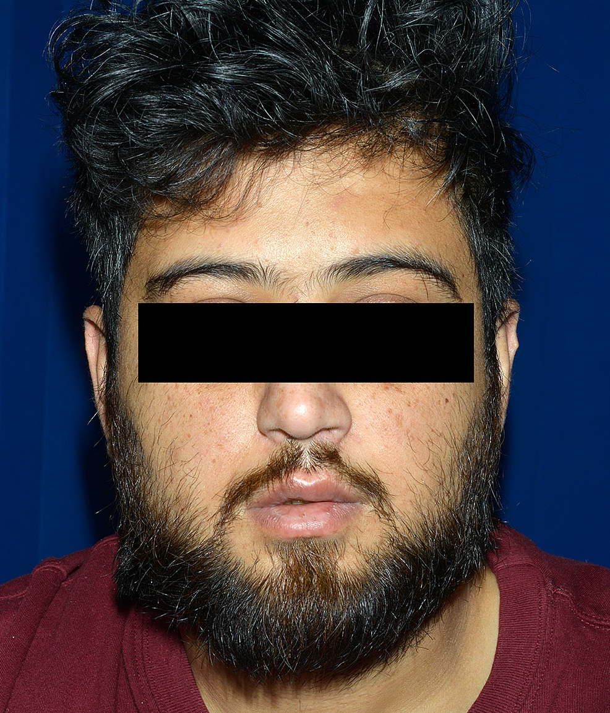

Esfíncteres ok · face dos dois lados
Muitos acham que desautonomia = incontinência. Não: esfíncteres preservados; se falham, pense medula.
Separar esfíncteres preservados (GBS) de alterados (medula) e reconhecer o acometimento bilateral de pares cranianos.
Esfíncteres preservados
Apesar de poder haver desautonomia, os esfíncteres estão preservados. No padrão de Guillain-Barré não se espera incontinência urinária nem incontinência fecal.
Se houver alteração esfincteriana, mudar o diagnóstico e pensar em lesão da medula espinhal.
Pares cranianos bilaterais
A doença, subindo, pode chegar à cabeça e acometer pares cranianos. Pares do III ao XII são nervos periféricos → Guillain-Barré pode acometê-los. Quando acomete, acomete de forma bilateral, porque é poli (simétrico).
Exemplo clássico: nervo facial → paralisia facial dos dois lados = diparesia facial (fraqueza) ou diplegia facial (falta de movimento).
Por que importa na prática: incontinência no "GBS" é sinal de alarme topográfico — não "piora esperada". Face bilateral reforça o "poli", não "AVC de tronco" isolado sem o resto do quadro.
Resumo operacional: esfíncteres OK = GBS possível; esfíncteres ruins = medula; PC III–XII bilaterais possíveis.

Figure 2 — Image showing an attempt to raise eyebrows. From: Jha G, Azhar S, Kuttuva S, Elahi S, Baseer A. Bilateral Facial Palsy: A Case Study of an Exceedingly Rare and Difficult Diagnosis. Cureus. 2021;13(10):e18900. Licensed under CC BY 4.0. Source: https://pmc.ncbi.nlm.nih.gov/articles/PMC8601397/
Face dos dois lados
A diparesia facial é a marca do "poli" nos pares cranianos. Não é a paralisia de Bell unilateral que o pronto-socorro vê todo dia — são os dois lados. Quando o paciente não consegue franzir a testa nem fechar os olhos de nenhum dos lados, e o resto do corpo também está fraco, o "poli" se confirma da cabeça aos pés.
O que mata quando o tronco e o autonômico entram — e por que não manda pra casa.
Quiz
Q1. Incontinência urinária no quadro "parecido com GBS" deve fazer:
Q2. Pares cranianos III–XII no GBS:
Q3. Paralisia facial dos dois lados no contexto de GBS chama-se: